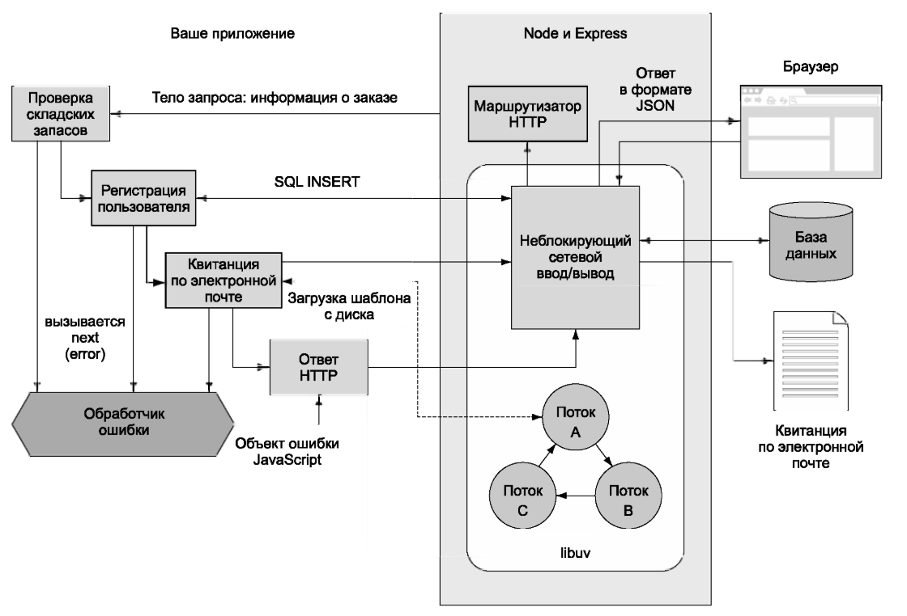

Среда Node — это JavaScript с привязками к лежащей в основе операционной системе (ОС), что делает возможным написание программ на JavaScript, которые выполняют чтение и запись файлов, запускают дочерние процессы и взаимодействуют через сеть. В результате среда Node пригодна в качестве:
Определяющей характеристикой среды Node является ее однопоточный основанный на событиях параллелизм, обеспечиваемый по умолчанию асинхронным API-интерфейсом.
Помимо исполняемого файла Node установка Node также включает npm — диспетчер пакетов, который обеспечивает легкий доступ к обширной экосистеме инструментов и библиотек JavaScript. В примерах настоящей главы будут применяться только встроенные пакеты Node, a npm или любые внешние библиотеки не потребуются.
Одна из сильных сторон Node и JavaScript вообще — однопоточная модель программирования. Программные потоки (threads) являются стандартным источником ошибок, и хотя некоторые из недавно появившихся языков программирования, включая Go и Rust, пытаются предоставить безопасные инструменты параллельного программирования, Node работает с моделью, используемой в браузере.
Браузерный код представляет собой последовательность команд, которые выполняются одна за одной; код не выполняется параллельно.
Для пользовательских интерфейсов такая модель не имеет смысла: пользователь не хочет дожидаться завершения медленных операций (например, обращений к данным по сети или к файлам). Для решения этой проблемы в браузерах используются события: когда пользователь щелкает на кнопке, инициируется событие, и выполняется функция, которая была определена ранее, но еще не выполнялась. Тем самым предотвращаются некоторые проблемы, встречающиеся в многопоточном программировании, включая взаимные блокировки (deadlocks) ресурсов и состояния гонки (race conditions).
Что это означает в контексте программирования на стороне сервера? Ситуация аналогична: запросы ввода/вывода (например, обращения к диску или сетевым ресурсам) также выполняются относительно медленно, поэтому исполнительная среда не должна блокировать выполнение бизнес-логики во время чтения файлов или передачи сообщений по сети.
Для этого в Node используются три концепции:
Неблокирующий ввод/вывод — низкоуровневый термин с точки зрения программиста Node. Он означает, что программа может обратиться с запросом к сетевому ресурсу и заняться чем-то другим. А потом, когда сетевая операция будет завершена, выполняется функция обратного вызова, которая обработает результат.
На рис. ниже изображено типичное веб-приложение Node, использующее библиотеку веб-программирования Express для обработки заказов в магазине. В нем:
По сути, перед нами прямолинейный императивный код JavaScript, но исполнительная среда работает параллельно, потому что она использует неблокирующий ввод/вывод.
На рис. выше приложение обращается к базе данных по сети. В Node сетевые операции выполняются без блокировки, потому что Node при помощи библиотеки libuv использует неблокирующие сетевые вызовы операционной системы. Эта функциональность по-разному реализована для Linux, macOS и Windows, но вам придется иметь дело только с удобной библиотекой JavaScript для работы с базами данных. Хотя вы пишете команды типа db.insert(query, err => {}), Node во внутренней реализации выполняет оптимизированные неблокирующие сетевые операции.
Обращения к диску происходят примерно так же, но, как ни странно, полного совпадения нет. Когда приложение генерирует квитанцию, отправляемую по электронной почте, и шаблон сообщения читается с диска, libuv использует пул потоков для создания иллюзии использования неблокирующего вызова. Управление пулом потоков — довольно тяжелое дело, но понять команду email.send('template.ejs', (err, html) => {}) определенно намного проще.
Истинное преимущество использования асинхронных API с неблокирующими операциями ввода/вывода заключается в том, что Node может заниматься другими делами во время выполнения относительно медленных процессов. И хотя выполняться может только однопоточное и однопроцессное веб-приложение Node, в любой момент времени оно может обрабатывать сразу несколько подключений от тысяч потенциальных посетителей сайта. Чтобы понять, как это происходит, необходимо познакомиться с циклом событий.
Если вы привыкли к программированию на JavaScript для веб-браузеров, тогда одним из небольших сюрпризов, касающихся Node, будет то, что функция console.log() предназначена не только для отладки. Она является простейшим способом отображения сообщения пользователю в Node или в более общем плане отправки вывода в поток stdout. Вот как выглядит классическая программа “Hello World” в Node:
console.log("Hello World!");В веб-браузерах console.log(), console.warn() и console.error(), как правило, отображают маленькие значки рядом со своим выводом в консоли инструментов разработчика, чтобы обозначать различные журнальные сообщения.
Если вы ранее писали программы в стиле Unix, предназначенные для вызова из окна терминала или другого интерфейса командной строки, то вам известно, что такие программы обычно получают свой ввод в первую очередь из аргументов командной строки и во вторую очередь из переменных среды.
Среда Node следует таким соглашениям Unix. Программа Node может читать свои аргументы командной строки из массива строк process.argv. Первый элемент этого массива всегда будет путем к исполняемому файлу Node. Второй аргумент — путь к файлу кода JavaScript, который Node выполняет. Оставшиеся элементы в массиве process.argv являются аргументами, отделенными друг от друга пробелами, которые вы передали в командной строке, когда вызывали Node. Например, пусть вы сохранили приведенную ниже очень короткую программу Node в файле argv.js:console.log(process.argv);Вывод:
$ node --trace-uncaught argv.js --arg1 --arg2 filename
[
'/usr/local/bin/node',
'/private/tmp/argv.js',
'--arg1',
'--arg2',
'filename'
]Здесь необходимо отметить два момента:
Программы Node могут также принимать ввод от переменных среды в стиле Unix. Среда Node делает их доступными через объект process.env. Именами свойств этого объекта будут имена переменных среды, а значениями (всегда строковыми) свойств — значения переменных среды.
Вот неполный список переменных среды в некоторой системе:
$ node -р -е 'process.env'
{
SHELL: '/bin/bash',
USER: 'david',
PATH: '/usr/local/bin:/usr/bin:/bin:/usr/sbin:/sbin',
PWD: '/tmp',
LANG: 'en_US.UTF-8',
HOME: '/Users/david',
}